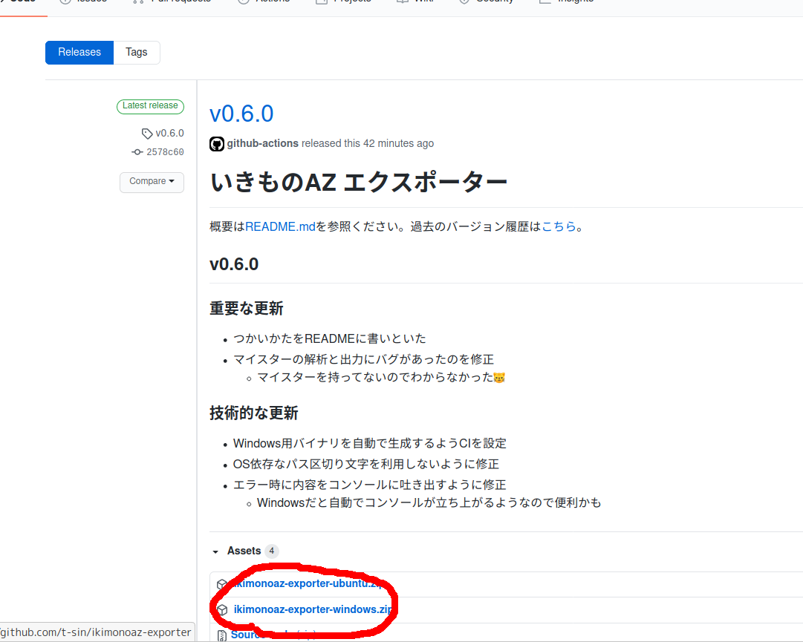
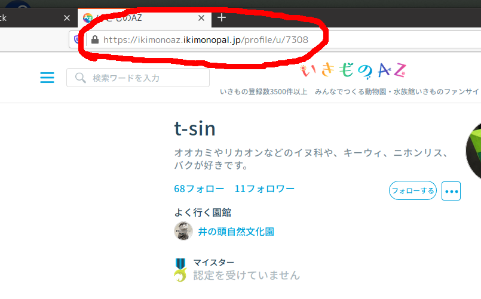

これはなに？
いきもの特化型SNS「いきものAZ」の投稿記事や写真、動画をパソコンに保存するためのツールです。
背景
寂しいですが、いきもの特化型SNSの「いきものAZ」がサービス終了することになりました。ぼくは2年前に投稿が止まってしまいましたが (撮った写真の整理が追いつかなくて) 、せっかく書いた記事やその写真を思い出としてとっておきたいなと思いました。
公式にはデータのエクスポート機能は提供されていないようですので、自分用にエクスポートアプリをつくりました。
使い方
以下のように使ってください。
- このページを開く
-
一番上側にある新しいバージョンの
ikimonoaz-exporter-XXXXX.zipをダウンロードして解凍する XXXXXは自分の使っているオペレーティングシステムを選んでください- おそらくたいていの方は
windowsです - 英語が多くてすみません
- 解凍先にある
ikimonoaz-exporter.exeをダブルクリックする -
いきものAZのマイページにいき、アドレス欄からURLをコピペする
 保存先フォルダを選ぶをクリック (いくつかファイルとフォルダができます)- データを保存するフォルダを選択して
Openを押す (英語ですみません) エクスポート開始をクリック- 待つ (投稿量によりますが5分くらい時間がかかります)
- 完了したら
エクスポート完了と表示されるので保存先のindex.htmlをダブルクリック - 🐿️🥳
スペシャルサンクス (開発中ずっと聴いてた)
作者
- t-sin (twitter: @sin_clav)
- いきものなほしいものリスト